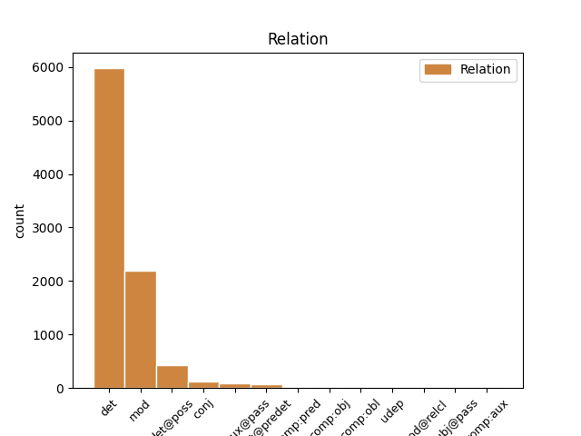
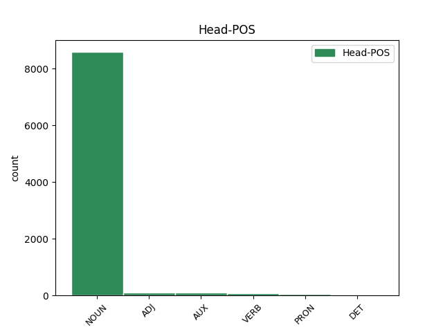
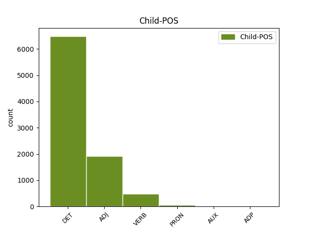

Distribution of features within this leaf



Agreement Rules sorted by frequency.
When the dependent token is None
1 Nessun _ _ _ _ 0 _ _ _
2 poema _ _ _ _ 0 _ _ _
3 di _ _ _ _ 0 _ _ _
4 Shakespeare _ _ _ _ 0 _ _ _
5 era _ _ _ _ 0 _ _ _
6 incluso _ _ _ _ 0 _ _ _
7 in _ _ _ _ 0 _ _ _
8 la il DET RD Definite=Def|Gender=Fem|Number=Sing|PronType=Art 9 det _ _
9 raccolta raccolta NOUN S Gender=Fem|Number=Sing 0 _ _ _
10 " _ _ _ _ 0 _ _ _
11 First _ _ _ _ 0 _ _ _
12 Folio _ _ _ _ 0 _ _ _
13 " _ _ _ _ 0 _ _ _
14 . _ _ _ _ 0 _ _ _
When the dependent token is None
1 Le _ _ _ _ 0 _ _ _
2 opere _ _ _ _ 0 _ _ _
3 di _ _ _ _ 0 _ _ _
4 Shakespeare _ _ _ _ 0 _ _ _
5 comprendono _ _ _ _ 0 _ _ _
6 36 _ _ _ _ 0 _ _ _
7 pezzi pezzo NOUN S Gender=Masc|Number=Plur 0 _ _ _
8 teatriali teatrali ADJ A Gender=Masc|Number=Plur 7 mod _ SpaceAfter=No
9 , _ _ _ _ 0 _ _ _
10 stampati _ _ _ _ 0 _ _ _
11 in _ _ _ _ 0 _ _ _
12 il _ _ _ _ 0 _ _ _
13 First _ _ _ _ 0 _ _ _
14 Folio _ _ _ _ 0 _ _ _
15 di _ _ _ _ 0 _ _ _
16 il _ _ _ _ 0 _ _ _
17 1623 _ _ _ _ 0 _ _ _
18 , _ _ _ _ 0 _ _ _
19 elencati _ _ _ _ 0 _ _ _
20 seguendo _ _ _ _ 0 _ _ _
21 la _ _ _ _ 0 _ _ _
22 classificazione _ _ _ _ 0 _ _ _
23 di _ _ _ _ 0 _ _ _
24 il _ _ _ _ 0 _ _ _
25 Folio _ _ _ _ 0 _ _ _
26 come _ _ _ _ 0 _ _ _
27 commedie _ _ _ _ 0 _ _ _
28 , _ _ _ _ 0 _ _ _
29 storie _ _ _ _ 0 _ _ _
30 e _ _ _ _ 0 _ _ _
31 tragedie _ _ _ _ 0 _ _ _
32 . _ _ _ _ 0 _ _ _
When the dependent token is None
1 Le _ _ _ _ 0 _ _ _
2 opere _ _ _ _ 0 _ _ _
3 di _ _ _ _ 0 _ _ _
4 Shakespeare _ _ _ _ 0 _ _ _
5 comprendono _ _ _ _ 0 _ _ _
6 36 _ _ _ _ 0 _ _ _
7 pezzi _ _ _ _ 0 _ _ _
8 teatriali _ _ _ _ 0 _ _ _
9 , _ _ _ _ 0 _ _ _
10 stampati stampare VERB V Gender=Masc|Number=Plur|Tense=Past|VerbForm=Part 0 _ _ _
11 in _ _ _ _ 0 _ _ _
12 il _ _ _ _ 0 _ _ _
13 First _ _ _ _ 0 _ _ _
14 Folio _ _ _ _ 0 _ _ _
15 di _ _ _ _ 0 _ _ _
16 il _ _ _ _ 0 _ _ _
17 1623 _ _ _ _ 0 _ _ _
18 , _ _ _ _ 0 _ _ _
19 elencati elencare VERB V Gender=Masc|Number=Plur|Tense=Past|VerbForm=Part 10 conj _ _
20 seguendo _ _ _ _ 0 _ _ _
21 la _ _ _ _ 0 _ _ _
22 classificazione _ _ _ _ 0 _ _ _
23 di _ _ _ _ 0 _ _ _
24 il _ _ _ _ 0 _ _ _
25 Folio _ _ _ _ 0 _ _ _
26 come _ _ _ _ 0 _ _ _
27 commedie _ _ _ _ 0 _ _ _
28 , _ _ _ _ 0 _ _ _
29 storie _ _ _ _ 0 _ _ _
30 e _ _ _ _ 0 _ _ _
31 tragedie _ _ _ _ 0 _ _ _
32 . _ _ _ _ 0 _ _ _
When the dependent token is None
1 Una _ _ _ _ 0 _ _ _
2 serie _ _ _ _ 0 _ _ _
3 di _ _ _ _ 0 _ _ _
4 edizioni edizione NOUN S Gender=Fem|Number=Plur 0 _ _ _
5 scolastiche _ _ _ _ 0 _ _ _
6 di _ _ _ _ 0 _ _ _
7 la _ _ _ _ 0 _ _ _
8 sua _ _ _ _ 0 _ _ _
9 opera _ _ _ _ 0 _ _ _
10 , _ _ _ _ 0 _ _ _
11 specialmente _ _ _ _ 0 _ _ _
12 quelle quello PRON PD Gender=Fem|Number=Plur|PronType=Dem 4 mod _ _
13 di _ _ _ _ 0 _ _ _
14 Samuel _ _ _ _ 0 _ _ _
15 Johnson _ _ _ _ 0 _ _ _
16 in _ _ _ _ 0 _ _ _
17 il _ _ _ _ 0 _ _ _
18 1765 _ _ _ _ 0 _ _ _
19 e _ _ _ _ 0 _ _ _
20 Edmond _ _ _ _ 0 _ _ _
21 Malone _ _ _ _ 0 _ _ _
22 in _ _ _ _ 0 _ _ _
23 il _ _ _ _ 0 _ _ _
24 1790 _ _ _ _ 0 _ _ _
25 , _ _ _ _ 0 _ _ _
26 è _ _ _ _ 0 _ _ _
27 da _ _ _ _ 0 _ _ _
28 aggiungere _ _ _ _ 0 _ _ _
29 a _ _ _ _ 0 _ _ _
30 la _ _ _ _ 0 _ _ _
31 sua _ _ _ _ 0 _ _ _
32 crescente _ _ _ _ 0 _ _ _
33 reputazione _ _ _ _ 0 _ _ _
34 . _ _ _ _ 0 _ _ _
When the dependent token is None
1 Alcune _ _ _ _ 0 _ _ _
2 attribuzioni _ _ _ _ 0 _ _ _
3 , _ _ _ _ 0 _ _ _
4 come _ _ _ _ 0 _ _ _
5 Tito _ _ _ _ 0 _ _ _
6 Andronico _ _ _ _ 0 _ _ _
7 e _ _ _ _ 0 _ _ _
8 i _ _ _ _ 0 _ _ _
9 primi _ _ _ _ 0 _ _ _
10 drammi _ _ _ _ 0 _ _ _
11 storici _ _ _ _ 0 _ _ _
12 , _ _ _ _ 0 _ _ _
13 restano _ _ _ _ 0 _ _ _
14 controverse _ _ _ _ 0 _ _ _
15 , _ _ _ _ 0 _ _ _
16 mentre _ _ _ _ 0 _ _ _
17 I _ _ _ _ 0 _ _ _
18 due _ _ _ _ 0 _ _ _
19 nobili _ _ _ _ 0 _ _ _
20 congiunti _ _ _ _ 0 _ _ _
21 e _ _ _ _ 0 _ _ _
22 l' _ _ _ _ 0 _ _ _
23 opera opera NOUN S Gender=Fem|Number=Sing 0 _ _ _
24 andata andare AUX VA Gender=Fem|Number=Sing|Tense=Past|VerbForm=Part 23 mod _ _
25 perduta _ _ _ _ 0 _ _ _
26 Cardenio _ _ _ _ 0 _ _ _
27 hanno _ _ _ _ 0 _ _ _
28 una _ _ _ _ 0 _ _ _
29 ben _ _ _ _ 0 _ _ _
30 attestata _ _ _ _ 0 _ _ _
31 documentazione _ _ _ _ 0 _ _ _
32 contemporanea _ _ _ _ 0 _ _ _
33 . _ _ _ _ 0 _ _ _
Disagree Examples:
1 distribuzione _ _ _ _ 0 _ _ _
2 di _ _ _ _ 0 _ _ _
3 copie _ _ _ _ 0 _ _ _
4 di _ _ _ _ 0 _ _ _
5 l' _ _ _ _ 0 _ _ _
6 opera _ _ _ _ 0 _ _ _
7 o _ _ _ _ 0 _ _ _
8 di _ _ _ _ 0 _ _ _
9 supporti _ _ _ _ 0 _ _ _
10 fonografici _ _ _ _ 0 _ _ _
11 su _ _ _ _ 0 _ _ _
12 cui _ _ _ _ 0 _ _ _
13 l' _ _ _ _ 0 _ _ _
14 opera _ _ _ _ 0 _ _ _
15 è _ _ _ _ 0 _ _ _
16 registrata _ _ _ _ 0 _ _ _
17 , _ _ _ _ 0 _ _ _
18 comunicazione _ _ _ _ 0 _ _ _
19 a _ _ _ _ 0 _ _ _
20 il _ _ _ _ 0 _ _ _
21 pubblico _ _ _ _ 0 _ _ _
22 , _ _ _ _ 0 _ _ _
23 rappresentazione _ _ _ _ 0 _ _ _
24 , _ _ _ _ 0 _ _ _
25 esecuzione _ _ _ _ 0 _ _ _
26 , _ _ _ _ 0 _ _ _
27 recitazione _ _ _ _ 0 _ _ _
28 o _ _ _ _ 0 _ _ _
29 esposizione esposizione NOUN S Gender=Fem|Number=Sing 0 _ _ _
30 in _ _ _ _ 0 _ _ _
31 pubblico _ _ _ _ 0 _ _ _
32 , _ _ _ _ 0 _ _ _
33 ivi _ _ _ _ 0 _ _ _
34 inclusa _ _ _ _ 0 _ _ _
35 la _ _ _ _ 0 _ _ _
36 trasmissione _ _ _ _ 0 _ _ _
37 audio _ _ _ _ 0 _ _ _
38 digitale _ _ _ _ 0 _ _ _
39 di _ _ _ _ 0 _ _ _
40 l' _ _ _ _ 0 _ _ _
41 opera _ _ _ _ 0 _ _ _
42 , _ _ _ _ 0 _ _ _
43 e _ _ _ _ 0 _ _ _
44 ciò ciò PRON PD Gender=Masc|Number=Sing|PronType=Dem 29 conj _ _
45 anche _ _ _ _ 0 _ _ _
46 quando _ _ _ _ 0 _ _ _
47 l' _ _ _ _ 0 _ _ _
48 opera _ _ _ _ 0 _ _ _
49 sia _ _ _ _ 0 _ _ _
50 incorporata _ _ _ _ 0 _ _ _
51 in _ _ _ _ 0 _ _ _
52 collezioni _ _ _ _ 0 _ _ _
53 di _ _ _ _ 0 _ _ _
54 opere _ _ _ _ 0 _ _ _
55 ; _ _ _ _ 0 _ _ _
1 inoltre _ _ _ _ 0 _ _ _
2 , _ _ _ _ 0 _ _ _
3 in _ _ _ _ 0 _ _ _
4 caso _ _ _ _ 0 _ _ _
5 di _ _ _ _ 0 _ _ _
6 Opera _ _ _ _ 0 _ _ _
7 Derivata _ _ _ _ 0 _ _ _
8 , _ _ _ _ 0 _ _ _
9 devi _ _ _ _ 0 _ _ _
10 menzionare _ _ _ _ 0 _ _ _
11 l' _ _ _ _ 0 _ _ _
12 uso _ _ _ _ 0 _ _ _
13 di _ _ _ _ 0 _ _ _
14 l' _ _ _ _ 0 _ _ _
15 opera _ _ _ _ 0 _ _ _
16 in _ _ _ _ 0 _ _ _
17 l' _ _ _ _ 0 _ _ _
18 opera _ _ _ _ 0 _ _ _
19 derivata _ _ _ _ 0 _ _ _
20 ( _ _ _ _ 0 _ _ _
21 ad _ _ _ _ 0 _ _ _
22 esempio _ _ _ _ 0 _ _ _
23 , _ _ _ _ 0 _ _ _
24 " _ _ _ _ 0 _ _ _
25 traduzione _ _ _ _ 0 _ _ _
26 francese _ _ _ _ 0 _ _ _
27 di _ _ _ _ 0 _ _ _
28 l' _ _ _ _ 0 _ _ _
29 opera _ _ _ _ 0 _ _ _
30 di _ _ _ _ 0 _ _ _
31 l' _ _ _ _ 0 _ _ _
32 autore _ _ _ _ 0 _ _ _
33 originario _ _ _ _ 0 _ _ _
34 " _ _ _ _ 0 _ _ _
35 , _ _ _ _ 0 _ _ _
36 o _ _ _ _ 0 _ _ _
37 " _ _ _ _ 0 _ _ _
38 sceneggiatura _ _ _ _ 0 _ _ _
39 basata _ _ _ _ 0 _ _ _
40 su _ _ _ _ 0 _ _ _
41 l' _ _ _ _ 0 _ _ _
42 opera _ _ _ _ 0 _ _ _
43 originaria _ _ _ _ 0 _ _ _
44 di _ _ _ _ 0 _ _ _
45 l' _ _ _ _ 0 _ _ _
46 autore autore NOUN S Gender=Masc|Number=Sing 0 _ _ _
47 originario originario ADJ A Gender=Fem|Number=Sing 46 mod _ SpaceAfter=No
48 " _ _ _ _ 0 _ _ _
49 ) _ _ _ _ 0 _ _ _
50 . _ _ _ _ 0 _ _ _
1 Il _ _ _ _ 0 _ _ _
2 Licenziante _ _ _ _ 0 _ _ _
3 non _ _ _ _ 0 _ _ _
4 sarà _ _ _ _ 0 _ _ _
5 vincolato _ _ _ _ 0 _ _ _
6 ad _ _ _ _ 0 _ _ _
7 alcuna _ _ _ _ 0 _ _ _
8 altra _ _ _ _ 0 _ _ _
9 disposizione disposizione NOUN S Gender=Fem|Number=Sing 0 _ _ _
10 addizionale addizionale ADJ A Gender=Masc|Number=Sing 9 mod _ _
11 che _ _ _ _ 0 _ _ _
12 possa _ _ _ _ 0 _ _ _
13 apparire _ _ _ _ 0 _ _ _
14 in _ _ _ _ 0 _ _ _
15 alcuna _ _ _ _ 0 _ _ _
16 comunicazione _ _ _ _ 0 _ _ _
17 da _ _ _ _ 0 _ _ _
18 te _ _ _ _ 0 _ _ _
19 proveniente _ _ _ _ 0 _ _ _
20 . _ _ _ _ 0 _ _ _
1 Una uno PRON PI Gender=Fem|Number=Sing|PronType=Ind 8 comp:pred _ _
2 di _ _ _ _ 0 _ _ _
3 le _ _ _ _ 0 _ _ _
4 vittime _ _ _ _ 0 _ _ _
5 più _ _ _ _ 0 _ _ _
6 recenti _ _ _ _ 0 _ _ _
7 è _ _ _ _ 0 _ _ _
8 stato essere AUX V Gender=Masc|Number=Sing|Tense=Past|VerbForm=Part 0 _ _ _
9 Kumar _ _ _ _ 0 _ _ _
10 Ponnambalam _ _ _ _ 0 _ _ _
11 , _ _ _ _ 0 _ _ _
12 che _ _ _ _ 0 _ _ _
13 qualche _ _ _ _ 0 _ _ _
14 mese _ _ _ _ 0 _ _ _
15 fa _ _ _ _ 0 _ _ _
16 era _ _ _ _ 0 _ _ _
17 venuto _ _ _ _ 0 _ _ _
18 in _ _ _ _ 0 _ _ _
19 visita _ _ _ _ 0 _ _ _
20 qui _ _ _ _ 0 _ _ _
21 a _ _ _ _ 0 _ _ _
22 il _ _ _ _ 0 _ _ _
23 parlamento _ _ _ _ 0 _ _ _
24 europeo _ _ _ _ 0 _ _ _
25 . _ _ _ _ 0 _ _ _
1 Le le PRON PC Clitic=Yes|Gender=Fem|Number=Sing|Person=3|PronType=Prs 4 comp:obl _ _
2 sarei _ _ _ _ 0 _ _ _
3 molto _ _ _ _ 0 _ _ _
4 grato grato ADJ A Gender=Masc|Number=Sing 0 _ _ _
5 se _ _ _ _ 0 _ _ _
6 prima _ _ _ _ 0 _ _ _
7 di _ _ _ _ 0 _ _ _
8 chiudere _ _ _ _ 0 _ _ _
9 questo _ _ _ _ 0 _ _ _
10 punto _ _ _ _ 0 _ _ _
11 a _ _ _ _ 0 _ _ _
12 l' _ _ _ _ 0 _ _ _
13 ordine _ _ _ _ 0 _ _ _
14 di _ _ _ _ 0 _ _ _
15 il _ _ _ _ 0 _ _ _
16 giorno _ _ _ _ 0 _ _ _
17 mi _ _ _ _ 0 _ _ _
18 permettesse _ _ _ _ 0 _ _ _
19 di _ _ _ _ 0 _ _ _
20 rilasciare _ _ _ _ 0 _ _ _
21 una _ _ _ _ 0 _ _ _
22 dichiarazione _ _ _ _ 0 _ _ _
23 di _ _ _ _ 0 _ _ _
24 voto _ _ _ _ 0 _ _ _
25 a _ _ _ _ 0 _ _ _
26 nome _ _ _ _ 0 _ _ _
27 di _ _ _ _ 0 _ _ _
28 il _ _ _ _ 0 _ _ _
29 mio _ _ _ _ 0 _ _ _
30 gruppo _ _ _ _ 0 _ _ _
31 . _ _ _ _ 0 _ _ _